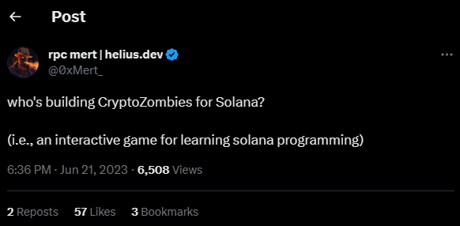
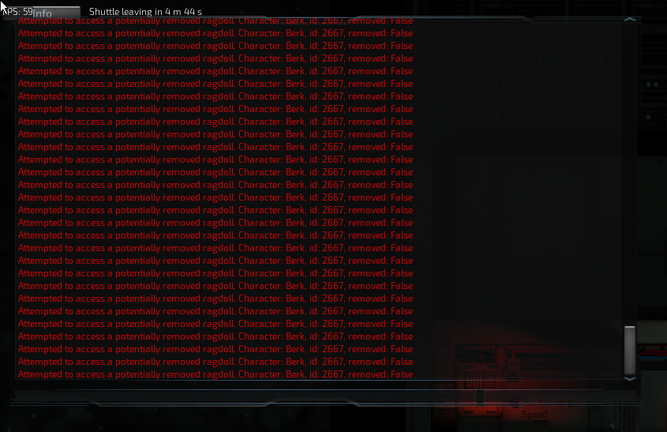

https://twitter.com/0xMert_/status/1671693640547147777
Learning Solana has been described as "eating glass", and I certainly ate plenty of glass while learning. Solana does not need to be this hard though, so I've built Mission ImposSOLble to teach you the battle-tested concepts I use everyday at Purebet in a fun and effective manner.
Lots of Solana tutorials go something like this.
Tutorial: Download this
You download it
Tutorial: Install this
You install it
Tutorial: Run this command
You run the command.
Tutorial: Everything works now!
Your console looks like this:
To avoid this situation, I've designed Mission ImposSOLble to use the simplest tools and minimize setup.
Everything is done through REST API calls for now. In the future everything will be done through whatever is most simple to set up.
This tutorial also uses Solana devnet, used for testing, so that you don't have to go through the difficulty of setting up a local Solana node.
I tried to learn Solana by diving into Rust and trying to code an on-chain program. Looking back, I realize learning how to read the Solana blockchain first, then writing transactions, and then creating on-chain programs (drawing) would have saved me a lot of frustration.
Lots of tutorials bring you straight to drawing without building the foundation, but not Mission ImposSOLble!
Tutorials can be boring. Mission ImposSOLble spices up dry Solana programming with a fun secret agent story! Ethereum has cryptozombies.io, and a fun tutorial for Solana is long overdue.
Discord: usernameusername_8020